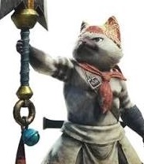
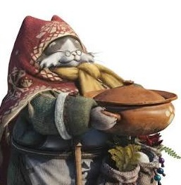

LA IMPORTANCIA DE LA COMIDA EN MONSTER HUNTER
La comida es mucho más que un descanso entre cacerías: puede ayudar a preparar al cazador
para una misión. Durante las expediciones es posible cocinar carne cruda en una barbacoa;
si queda bien hecha, recupera resistencia. En los poblados, los chefs preparan platos
que otorgan beneficios temporales, como aumentar la salud o la resistencia y activar
habilidades útiles. Por eso, comer antes de una misión puede marcar la diferencia.
Yomogi aparece en Monster Hunter Rise (2021). Es la cocinera de Kamura y
prepara dangos: brochetas de bolitas de arroz que pueden activar habilidades y
conceder ventajas antes de una misión.

CHEF MIAUSCULOSO
El Chef Miausculoso es de Monster Hunter: World (2018) y trabaja en la
cantina de Astera. Su equipo prepara comidas completas con ingredientes variados;
estos platos pueden mejorar atributos y otorgar habilidades de comida para la cacería.

MIAUBUELITA CHEF
La Miaubuelita Chef aparece en Monster Hunter World: Iceborne (2019) y
dirige la cocina de Seliana. Prepara platos con ingredientes variados que pueden
aumentar atributos y activar habilidades útiles para las misiones.
VIDEO COCINANDO CARNE EN MONSTER HUNTER
La barbacoa permite cocinar carne durante una misión. El momento adecuado para retirar
la carne es clave para que quede bien hecha.